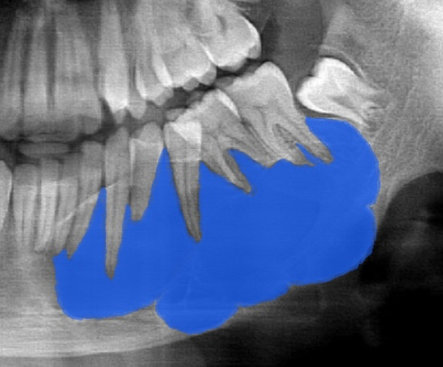
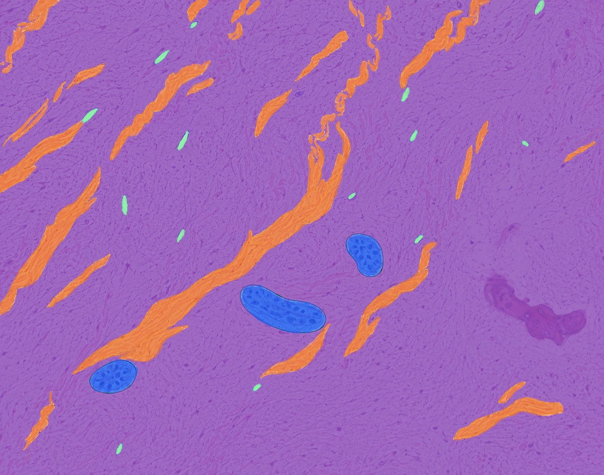
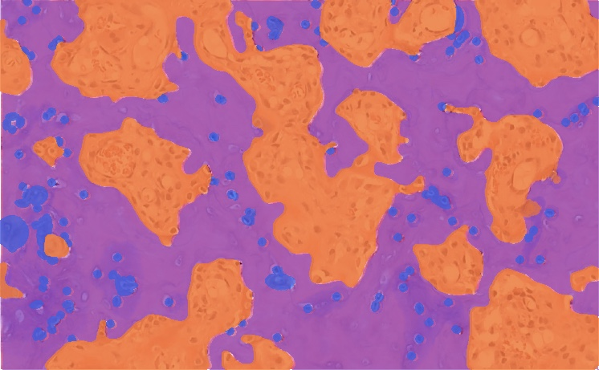

Epiteliales
Patrones celulares, islotes y estructuras de origen odontogénico.
ATLAS DIGITAL INTERACTIVO
Explora tumores y quistes odontogénicos mediante imágenes histológicas y recursos visuales diseñados para aprender a tu ritmo.
Comenzar recorrido →EXPLORA POR CLASIFICACIÓN

Patrones celulares, islotes y estructuras de origen odontogénico.

Matriz, estroma y componentes derivados del ectomesénquima.

Interacción entre componentes epiteliales y mesenquimatosos.
ACCESO RÁPIDO
BIBLIOTECA ACADÉMICA
Consulta una selección demostrativa de tumores y quistes odontogénicos.
APRENDIZAJE BASADO EN EVIDENCIA
Relaciona la imagen histológica con el razonamiento diagnóstico mediante comparación visual y autoevaluación.
Edad, localización, velocidad de crecimiento y relación con dientes.
Patrón, límites, calcificaciones, reabsorción y desplazamiento.
Arquitectura, estroma, queratinización, matriz y tejidos duros.
Esta publicación en GitHub Pages permite revisar la experiencia visual pública. El inicio de sesión, el panel Docente, la administración y la creación de contenidos estarán disponibles cuando WordPress se publique en atlas.sanmartin.edu.co.